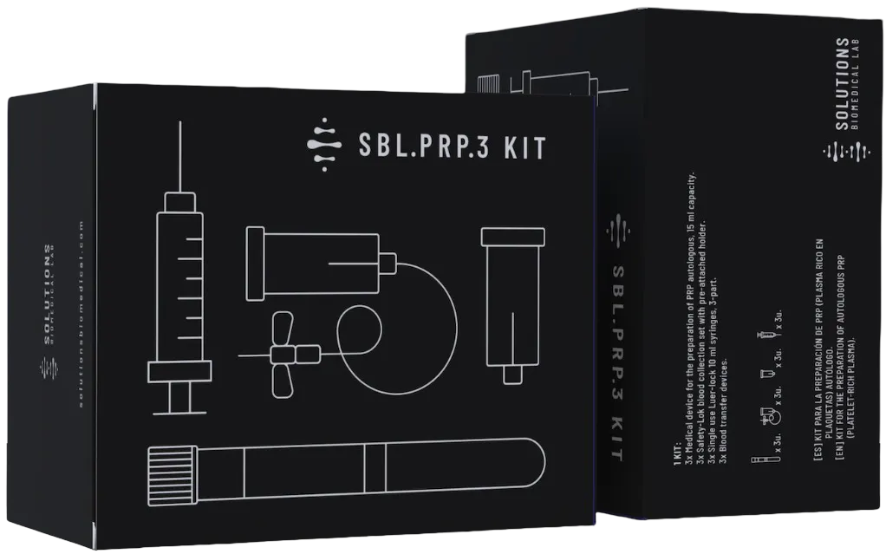
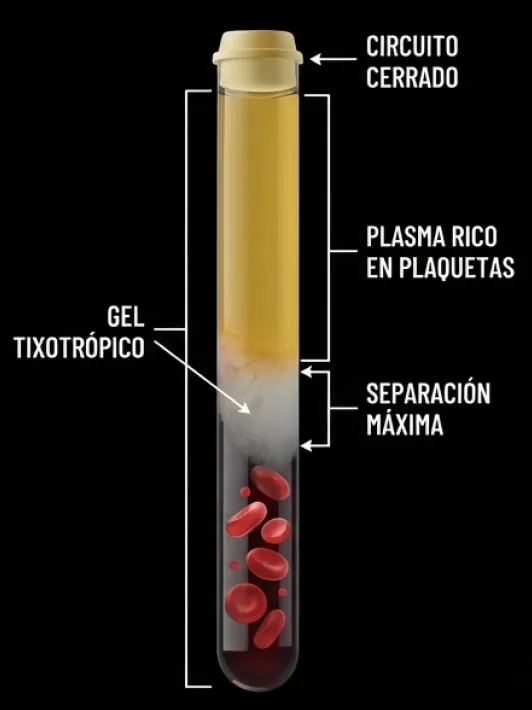
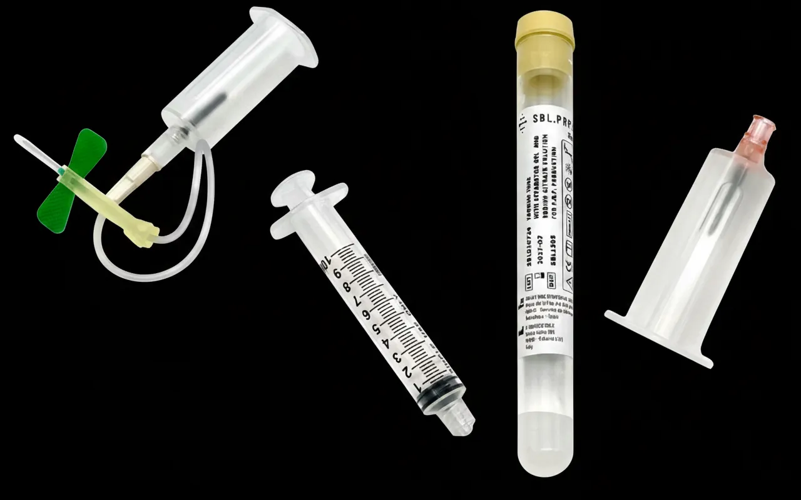
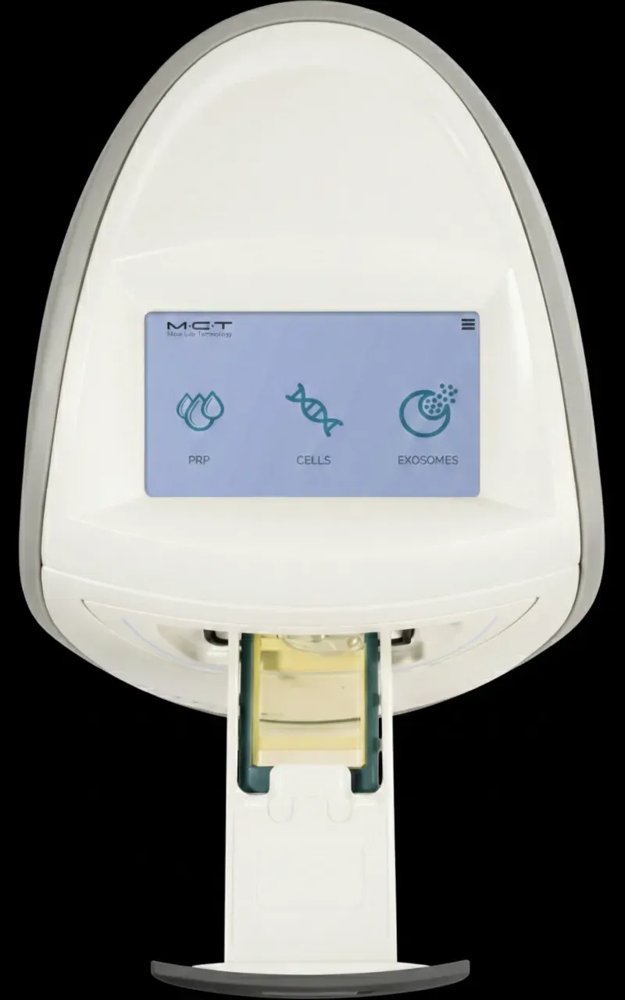
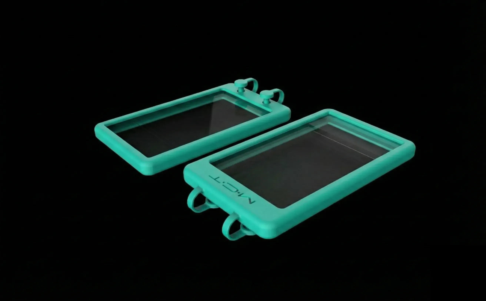
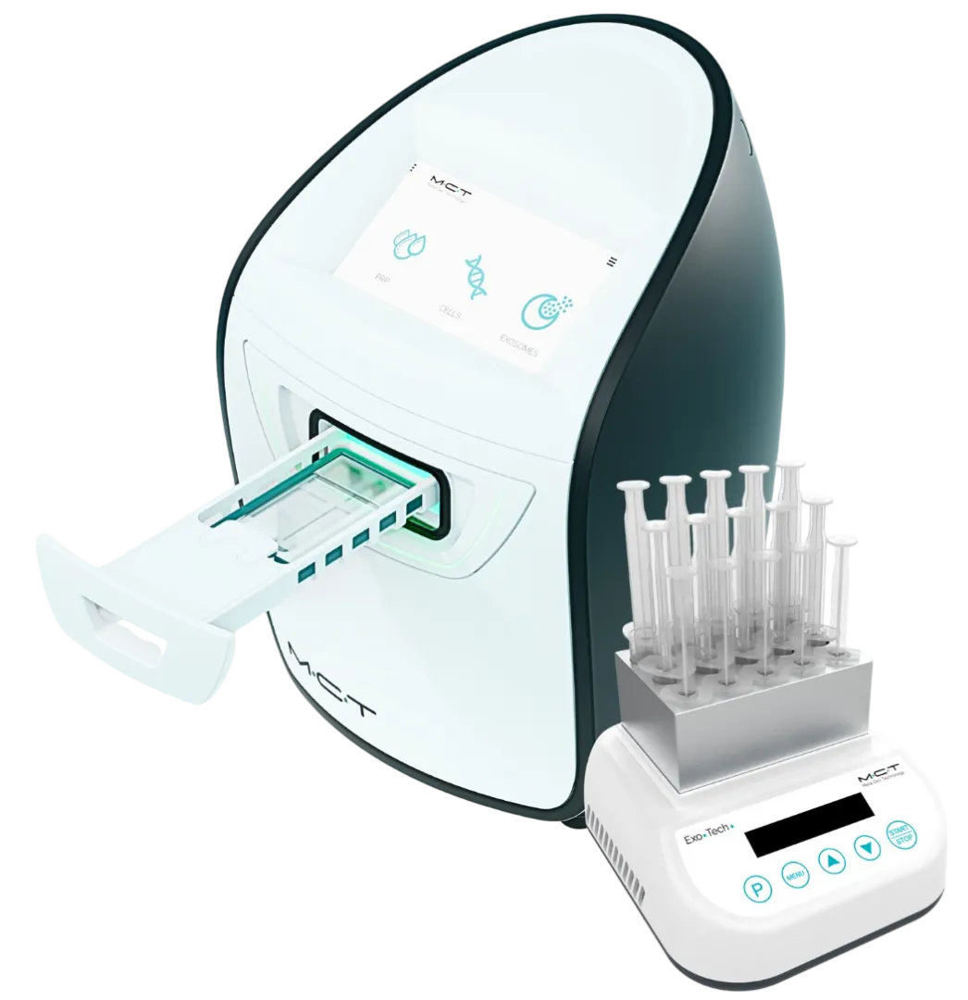
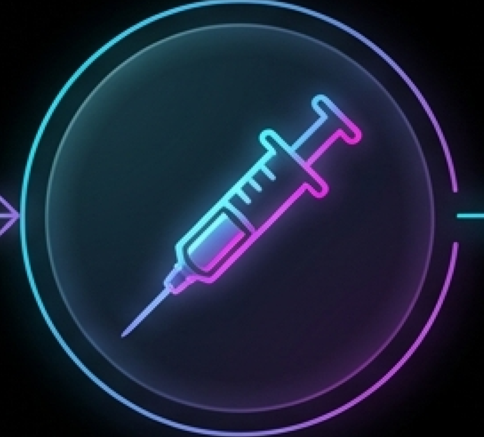

MEDICINA REGENERATIVA DE PRECISIÓN
ALGORITMOS TERAPÉUTICOS AVANZADOS
Del tratamiento paliativo a la bioestimulación activa e inmunomodulación.
- Actualización del arsenal terapéutico para especialistas.
- Enfoque en mecanismos biológicos: PRP de Alta Concentración y Señalización por Exosomas.
EVOLUCIÓN DEL PARADIGMA TERAPÉUTICO
ENFOQUE TRADICIONAL (PALIATIVO)

- Herramientas: Viscosuplementación, Corticoides, AINEs.
- Mecanismo: Lubricación mecánica y supresión sintomática.
- Limitación: No modifica la historia natural. Riesgo de condrotoxicidad. “Silenciar el síntoma”.
ENFOQUE REGENERATIVO (MODIFICADOR)

- Herramientas: PRP de Alta Concentración, Monocitos, Exosomas.
- Mecanismo: Señalización paracrina, inmunomodulación y síntesis de ECM.
- Objetivo: Restitución de la homeostasis tisular. “Reactivar la reparación endógena”.
LA TRIADA DE LA PRECISIÓN BIOLÓGICA
POTENCIA, MODULACIÓN Y SEÑALIZACIÓN
REGENERACIÓN ESTRUCTURAL
(SBL.PRP.3)

Clave: Concentración.
Función: Aporte masivo de Factores de Crecimiento (GF) para fases proliferativas.
INMUNOMODULACIÓN
(SBL.PRP.3+M)

Clave: Monocitos.
Función: Resolución de la inflamación crónica (Polarización M1 → M2).
REPROGRAMACIÓN CELULAR
(MCT EXOSOMAS)

Clave: Señalización Avanzada.
Función: Instrucciones complejas (miRNA, mRNA) para tejidos senescentes.
SBL.PRP.3: EL ESTÁNDAR EN OBTENCIÓN DE PRP AUTÓLOGO DE ALTA PUREZA
Dispositivo Médico Clase IIa para la preparación de Plasma Rico en Plaquetas de alta pureza.
DEFINICIÓN DEL SISTEMA
Sistema cerrado, estéril y apirogéno diseñado específicamente para procesar sangre periférica. Su certificación CE 0425 (Clase IIa) garantiza la seguridad para re-inyección en humanos.
EL PUENTE TECNOLÓGICO
El kit actúa como el procesador biológico necesario para desbloquear el potencial regenerativo de la sangre. Aísla mecánicamente las plaquetas y factores de crecimiento, eliminando los componentes proinflamatorios.
PROPUESTA DE VALOR
Transforma una extracción de 15 ml en un concentrado biológico potente, estandarizado y listo para aplicaciones en traumatología, medicina estética y ginecología.

INGENIERÍA DEL KIT: COMPONENTES Y ANATOMÍA
Tecnología de materiales diseñada para la máxima estabilidad biológica.
1. TUBOS DE VIDRIO FARMACÉUTICO (15 ML)
Vidrio de alta calidad que garantiza la integridad biológica y previene la activación plaquetaria prematura (adherencia) antes del momento terapéutico, a diferencia del plástico convencional.
2. GEL SEPARADOR TIXOTRÓPICO
El corazón del sistema. Un polímero inerte que se licúa durante la centrifugación para ubicarse con precisión entre los glóbulos rojos y el plasma. Al solidificarse, crea una barrera física permanente que evita la re-contaminación.

3. ANTICOAGULANTE ACD‑A
Citrato Dextrosa Fórmula A. Mantiene un pH fisiológico (~7) esencial para preservar la morfología y funcionalidad de las plaquetas durante el procesamiento.
4. SISTEMA DE VACÍO PRECALIBRADO
Asegura la extracción estéril y exacta del volumen de sangre necesario, minimizando el error humano y el riesgo de contaminación externa.
FUNCIONALIDAD Y RENDIMIENTO TÉCNICO
Un proceso físico optimizado para resultados biológicos superiores.
MECANISMO DE ACCIÓN
Centrifugación Suave: 3200 - 4000 RPM durante 8 minutos.
Separa los componentes por densidad sin dañar la membrana plaquetaria.
El Gel Tixotrópico secuestra el 99.7% de los glóbulos rojos en el
fondo.
VOLUMEN FINAL
De 15 ml de sangre total → 4 a 7.5 ml de PRP terapéutico.
(Incluye fase de resuspensión por
inversión).

UNIDAD MCT: BIOESTIMULACIÓN FOTOTÉRMICA
TECNOLOGÍA DE LUZ AZUL Y CONTROL TÉRMICO PARA POTENCIAR LA RESPUESTA CELULAR.
DEFINICIÓN
Sistema innovador diseñado para transformar células y plaquetas mediante estrés controlado, superando la terapia celular convencional.
MECANISMO DE ACCIÓN
• Luz Azul (400-470nm): La foto-transducción mediante opsinas azules
eleva los niveles de miRNAs y potencia la capacidad regenerativa.
• Control Térmico: El calor controlado aumenta la cinética de
liberación y la frecuencia de fusión de la membrana exosómica.
EFECTO BIOLÓGICO
• Estimulación del metabolismo celular (Síntesis de ATP).
• Liberación sostenida y controlada de factores de crecimiento.

KIT MCT: EL VEHÍCULO DE TRANSFORMACIÓN
SEGURIDAD, ESTERILIDAD Y DISEÑO ESPECÍFICO PARA EL PROCESAMIENTO FOTOTÉRMICO.
FUNCIONALIDAD
Consumible diseñado específicamente para alojar el material biológico (PRP) dentro de la Unidad MCT.
CARACTERÍSTICAS CRÍTICAS
• Circuito Cerrado: Garantiza la esterilidad total durante la
manipulación y el procesamiento térmico.
• Integridad de la Muestra: Materiales biocompatibles que resisten
el condicionamiento fototérmico sin alterar la estructura celular.
EL PROCESO
Actúa como el contenedor de 'bio-incubación', permitiendo que la luz y la temperatura actúen sobre el plasma sin riesgos de contaminación externa.

EL OBJETIVO: EXOSOMAS AUTÓLOGOS
LA NUEVA ERA DE LA MEDICINA REGENERATIVA “CELL-FREE”.
¿QUÉ SON?
Mensajeros naturales del cuerpo. Vesículas extracelulares (EVs) que transportan información genética y proteínas regenerativas.
LA VENTAJA MCT
• La unidad MCT fuerza a las células a liberar estos exosomas, creando un producto
final enriquecido.
• Señalización Superior: Elevada carga de miRNAs y capacidades
pro-angiogénicas superiores a las células basales.
RESULTADO CLÍNICO
• Autólogo: 100% compatible, derivado del propio paciente.
• Potencia: Mayor síntesis de ATP y regeneración tisular sostenida.

SEGURIDAD BIOLÓGICA Y MARCO REGULATORIO
Origen: Sangre del propio paciente.
Origen: Células madre animales, plantas.
Estatus: MEDICAL DEVICE (CE/MDR).
Uso clínico autorizado.
Estatus: COSMÉTICO (Tópico).
Inyección ‘off-label’ de
riesgo.
Seguridad: Compatibilidad HLA total.
Riesgo nulo de
transmisión.
Riesgos: Reacción inmunogénica,
variabilidad biológica.
ALGORITMO DE DECISIÓN CLÍNICA
SELECCIÓN TERAPÉUTICA BASADA EN EL MICROAMBIENTE
| CONDICIÓN CLÍNICA | DESCRIPCIÓN | PRODUCTO RECOMENDADO | RACIONAL TERAPÉUTICO |
|---|---|---|---|
| LESIÓN AGUDA / ESTRUCTURAL | Rotura tendinosa, post-quirúrgico. | SBL.PRP.3 | Prioridad: Aporte masivo de GFs para reparación rápida. |
| INFLAMACIÓN CRÓNICA / ARTROSIS | Sinovitis, dolor crónico, fallo previo. | SBL.PRP.3+M | Prioridad: Inmunomodulación (Shift M1 → M2). |
| SENESCENCIA / REFRACTARIO | Envejecimiento, metabolismo lento. | MCT EXOSOMAS | Prioridad: Reactivación metabólica (ATP) y señalización. |
| DÉFICIT DE VOLUMEN | Atrofia tisular. | EXO-TECH | Prioridad: Scaffold mecánico + bioactividad. |
SINERGIA TERAPÉUTICA: PROTOCOLOS COMBINADOS
"No elija una herramienta, diseñe un protocolo integral."
FASE 1: MODULACIÓN (Día 0)
Uso de SBL.PRP.3+M.
Objetivo: Limpiar el ambiente tóxico/inflamatorio.
FASE 2: REGENERACIÓN (Día 21+)
Uso de SBL.PRP.3 o Exosomas.
Objetivo: Estimular reparación sobre tejido receptivo.
IMPLEMENTACIÓN CLÍNICA Y FLUJO DE TRABAJO

RECOLECCIÓN
Sistema de vacutainer estéril.

PROCESAMIENTO
Sistema Cerrado.
8 min @ 4000 rpm.

APLICACIÓN
Intraarticular, Intratendinosa o Intradérmica.
SEGUIMIENTO
Evaluación clínica
post-procedimiento.